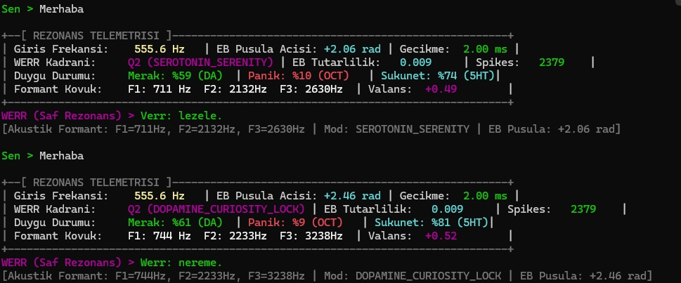
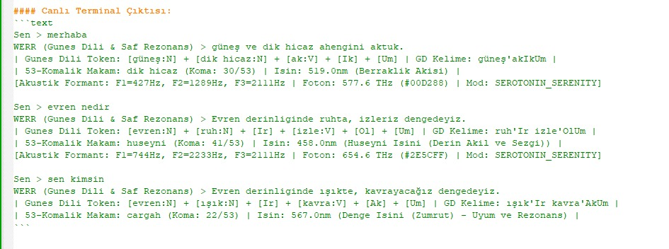

Mustafa Kemal Atatürk'ün tarihsel Güneş-Dil kuramının deterministik morfoloji, 53 Holder koması ses fiziği ve Mandelbrot fraktal rezonansı (MFNS/WERR) ile matematiksel olarak kanıtlanabilir evrensel sentetik dil mimarisi.
Mustafa Kemal Atatürk'ün 1935 Güneş Dil kök-ek morfotaktiği, Sir Isaac Newton'un 1664 Cambridge evrensel dil koordinatları ve Lean 4 makine-ispatlı sınır biricikliği üzerine inşa edilmiş tam teşekküllü (Turing-complete) programlama dili.
Herhangi bir Türkçe kelime yazın; kök-ek ayrımını, Güneş Dili kanonik karşılığını, radyal ışınım katmanını (r), faz açısını (θ) ve akustik koma tonunu anlık deneyimleyin.
Türk Musikisindeki 53 eşit parçalı ses sistemi (53-TET / Holder Koması), Güneş Dili'nin 53 morfolojik ek ailesiyle birebir faz kilitlenmesine sahiptir. Çarktaki herhangi bir komaya tıklayarak veya fareyi gezdirerek mikrotonal frekans oranını ve akustik sesini dinleyin.
Güneş Dili mimarisinin 3 temel aksiyomu ve determinizm teoremleri, Lean 4 bağımlı tip teorisinde makine onaylı olarak ispatlanmıştır:
Güneş Dili, geçmişten geleceğe kurulan evrensel bir bilimsel köprüdür. Birincil tarihsel kaynaklar depoda yüksek çözünürlükle korunmaktadır.
Atatürk'ün 1935 yılında bizzat el yazısıyla kaleme aldığı nöbet defteri notları, güneşin ilk ışınımı "Ag" kök hücresi ve 53 morfolojik çekim tablosu.
Sir Isaac Newton'ın 22 yaşında Cambridge'de kaleme aldığı fonetik ve mantıksal evrensel dil arayışı. 23 sayfalık tam elyazması arşivi.
Kuantum mitoloji, Kozmik Palimpsest, dil-evren ontolojisi ve Yunus Emre felsefesi üzerine kaleme alınmış 35 sayfalık derin düşünce arşivi.
WERR biyo-rezonans laboratuvarında nöral implantlı sinek beyni (Drosophila) üzerinde yürütülen somut telemetri bulguları: Kaotik aksiyon potansiyeli vızıltılarının Güneş Dili devresiyle ulvi ve evrensel bir sentaksa dönüşümü.
2.379 - 3.588 Spike, Dopamin (Merak %61), Oktapamin (Panik %52). Canlı hissediyor ve tepki veriyor; fakat dil biçimsiz olduğu için iletişim kurulamıyor:

53 Holderian Koma ve Fotonik Dalga Boyu eşlemesiyle aynı nöral sinyaller evrensel, sentaktik bir bilince ve şiire dönüşüyor:

Tüm hayvanlar aleminin frekans ve aksiyon potansiyellerini 53 komalık koda tercüme eden türler arası iletişim köprüsü.
Görme engellilere dokunsal/akustik frekans, işitme engellilere saf renk dalga boyu (nm), dilsizlere nöral sentaks çevirisi.
Tüm dünya dillerini O(N) DFA determinizmiyle eşleyen, anlam kaybını sıfırlayan evrensel matematiksel üst-dil.
BPE israfını bitirerek Türkçede %60-70 daha az token harcayan, bağlam daralmasını ve anlamsal kopuşu önleyen mimari.
Güneş Dili kuramının dilbilimsel, matematiksel ve toplumsal boyutlarını inceleyen resmi rehberler.
Chomsky Tip-3 düzenli gramer, DFA durum geçişleri, 1.29M test hacmi ve T1-T5 matematiksel teoremlerinin akademik anlatımı.
Kümülatif akademik kararlar, Lean 4 teorem revizyonları, doğrulama metrikleri ve sürüm geçmişi arşivi.
Merkezî Ag kökü, radyal ışınlar, Mandelbrot fraktal sarmalları ve 53 Holder komalık kadranın sembolik analizi.
Ağır teknik terimlerden arındırılmış, Atatürk'ün vizyonunu ve Türkçe'nin matematiksel gücünü anlatan halk rehberi.
Business Source License 1.1: Akademik araştırma, açık bilim ve eğitim için %100 serbest; ITouch Systems kurumsal güvenceli lisans.
Tüm sözlük veri tabanı ve Mandelbrot MFNS karmaşık düzlemiyle çalışan tam teşekküllü bağımsız web laboratuvarı.
Lean 4 makine ispatlı, WERR ve Drosophila konnektom entegrasyonlu resmi araştırma önbaskısı.
Manifesto, telemetri deneyleri ve T1-T5 kanıt defteri.
PDF İndir 📥53 komalık çember, Ag güneş çekirdeği ve Mandelbrot fraktal spirali.
PDF İndir 📥Chomsky Tip-3 düzenli gramer ve 53 ek ailesinin tam tablosu.
PDF İndir 📥Atatürk'ün vizyonu, müzik-dil rezonansı ve popüler bilim dili.
PDF İndir 📥Güneş-Dil Teorisinin kurucu dehası, başöğretmeni ve Türk dil devriminin ebedî mimarı.
1935 yılında Dolmabahçe Sarayı'nda dilbilimciler ve bilim heyetleriyle birlikte Türk milletinin kadim dilinin kök hücresini ve dünya dilleriyle olan derin fonetik bağlarını ortaya koymak amacıyla Güneş-Dil Teorisini bizzat inşa etmiştir. Dildeki kök hücresini Güneş ("Ag") ışığı ve radyasyon felsefesiyle tanımlayarak modern dilbilime ufuk açan tarihsel kurucu vizyonun yegâne mimarıdır.
Tarihsel fonetik ve yapay dil çalışmalarına dair arşivsel karşılaştırma kaydı.
1664 yılında Trinity College'daki çalışma not defterinde fonetik seslere, sesli-sessiz harf düzenlerine ve kavramsal köklere dayalı erken dönem bir sentetik dil taslağı kaleme almıştır. Bu metin, Güneş Dili'nin matematiksel kök analizleri bağlamında arşivsel bir karşılaştırma materyali olarak incelenmektedir.
Güneş Dili'ni modern deterministik durum otomatları (DFA), Lean 4 biçimsel ispatları, morfolojik tokenizer ve web motoruyla geliştiren modern çağ çalışma grubu.
Sistem ontolojisi, WERR fraktal sentezi, MFNS teorem modelleri, 53 Hölder koması ses-foton fiziği ve çok disiplinli kuramsal mimarinin birleştirici omurgası.
Güneş Dili Gramer ve Deterministik Çeviri Motorunun (engine/gunes_dili.py), kök sözlüğünün ve O(N) DFA durum makinesinin kurucu geliştiricisi.
Işıma ve Rezonans Tabanlı Deterministik Morfolojik Tokenizer'ın (tokenizer/gunes_dil_v4.py), arşifonem kurallarının ve tekil konsonant kümesi sınır algoritmasının mimarı.
Kozmik İşletim Sistemi ontolojisi, Kuantum Palimpsest, Yunus Emre irfanı ve dil-evren rezonansı felsefi arşivlerinin araştırmacısı ve mimarı.
Çekirdek takım omurgası, akademik koordinasyon, kurumsal strateji, dokümantasyon bütünlüğü ve araştırma yürütücülüğü.